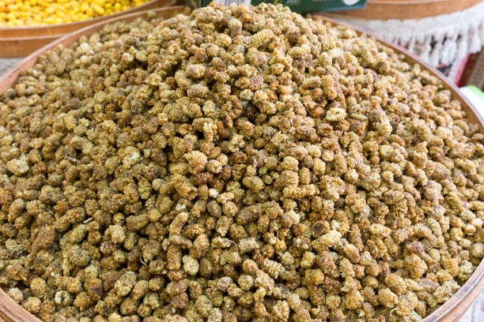

Beş kilo taze dut, bir kilo kuru dut
Taze dut ağırlığının ortalama %80'i sudur. Yaz aylarının sıcağında güneşte ve rüzgârda kuruyan meyveden geriye bu suyun neredeyse tamamı gider: bir kilo kuru dut için yaklaşık beş kilo taze dut gerekir. Tatlılığın bu kadar yoğun olmasının nedeni de bu.
Kurutma bittikten sonra dutlar üretim tesisimize alınır; fümigasyon ve temizleme aşamalarından geçirilerek paketlenir. İstediğiniz ambalaj ve gramaja göre hazırlanır.
- Dalında tam olgunlaşır, işlem görmeden kurutulur
- Güneş ve rüzgârla doğal kurutma; ilave şeker ve katkı yok
- Tesiste fümigasyon ve temizleme sonrası paketleme
- Talep edilen ambalaj ve gramaja göre hazırlanır
Teknik bilgiler
| Botanik adı | Morus alba (beyaz dut) |
|---|---|
| Menşe | Türkiye |
| İçindekiler | %100 kuru dut. İlave şeker ve katkı maddesi içermez. |
| Kurutma | Güneş ve rüzgârla doğal kurutma, işlem uygulanmaz |
| Verim | Yaklaşık 5 kg taze duttan 1 kg kuru dut |
| İşleme | Fümigasyon ve temizleme sonrası paketleme |
| Hasat | Yaz ayları, yıl boyu sevkiyat |
| GTİP kodu | 0813.40 |
Ambalaj seçenekleri
- 12,5 kg dökme koli
- Talep ettiğiniz ambalaj ve gramajda hazırlanan formatlar
- Kendi etiketinizle perakende paket
Kullanım alanları
Atıştırmalık ve kuruyemiş karışımları, kahvaltılık gevrek ve bar, pekmez ve dut kurusu tozu, fırıncılık ve tatlı üretimi.
Gramajı siz söyleyin
Kuru dutu istediğiniz ambalaj ve gramajda hazırlıyoruz.